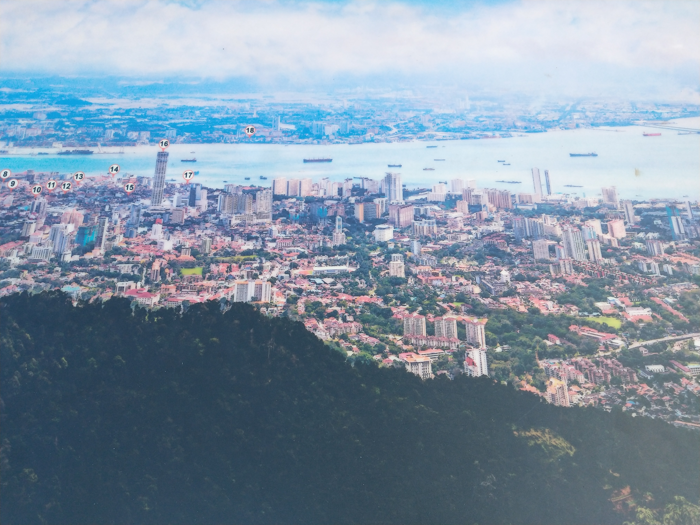
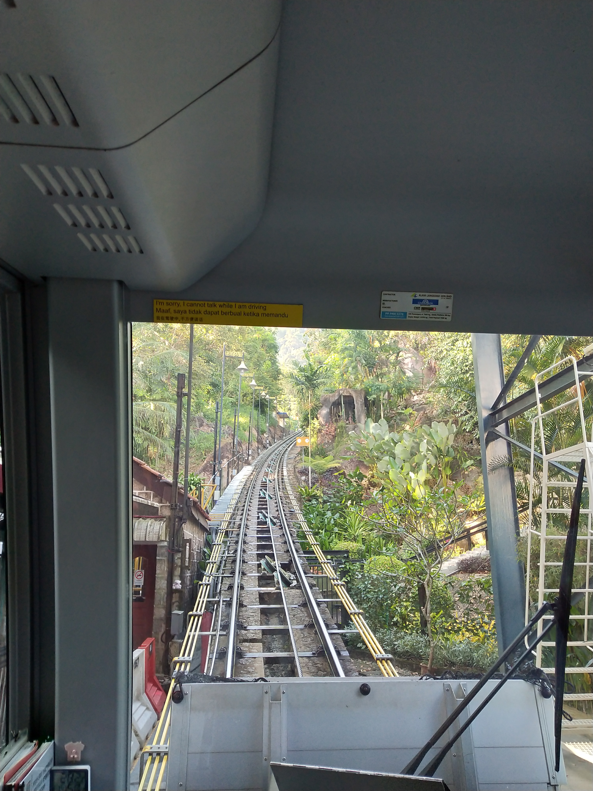
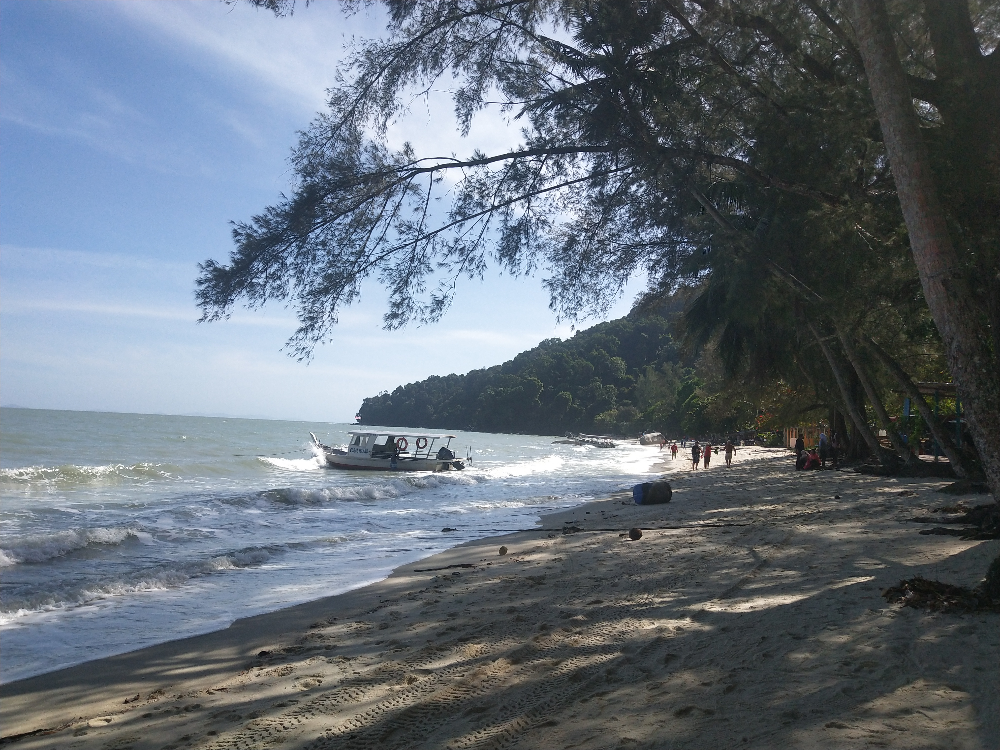
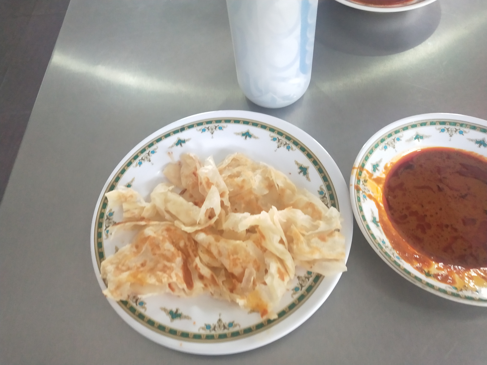
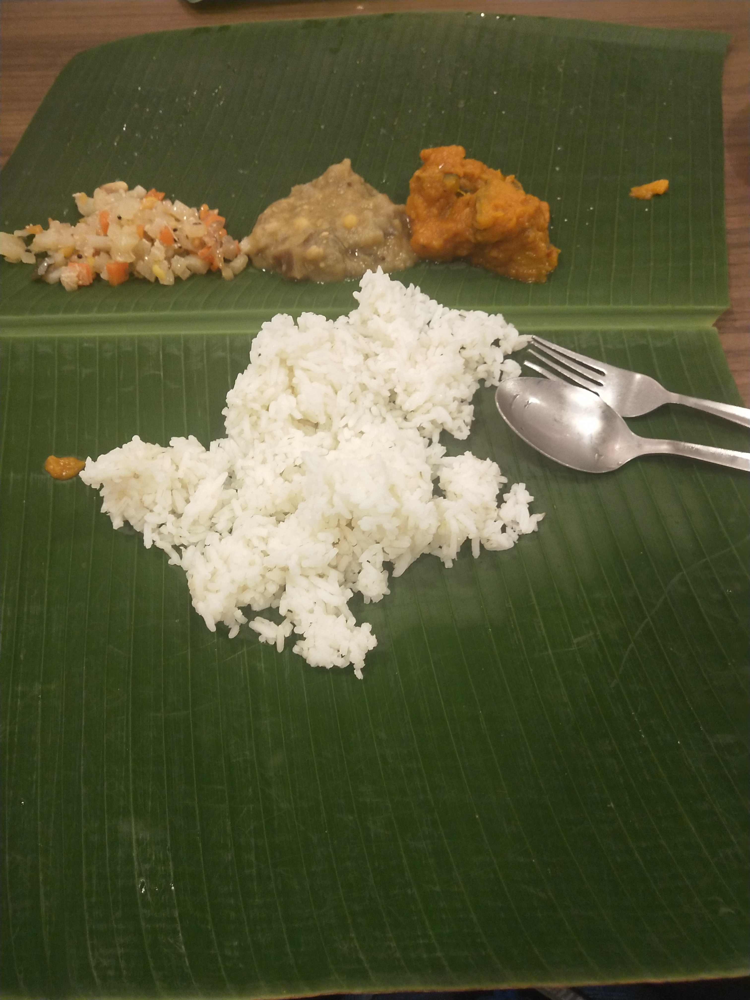
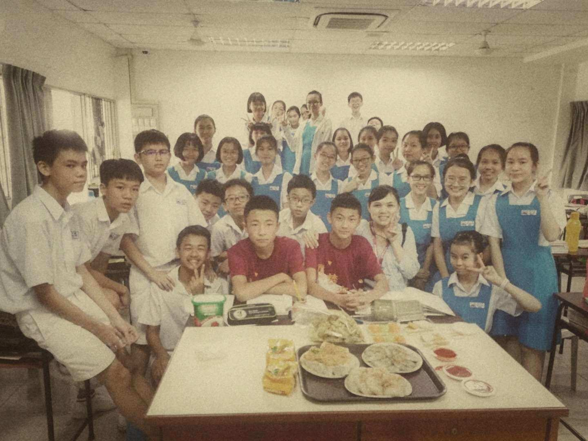

我的槟城之旅
何为东方之珠？你的探索之旅，发现新大陆的冒险故事！
槟城，槟城亦称“槟州”，以“电子制造业基地”享誉全球。

我最喜欢的三个景点，人气目的地推荐!
升旗山
又称槟榔山，上到山顶，可以俯瞰整个槟城的风景。山上空气清新宜人，一望无际。

壁画街
当我们亲身来到这里时，看到这些艺术还是有些感慨。一面面已经斑驳泛黄的墙壁上，这些壁画也仿佛让我们感受到了当地特有的异国风情。

猴子沙滩
未受到人类的破坏，依然处于原始状态。岛上的一些调皮可爱的猴子为海滩增添的生机与活力

我最喜欢的三种美食
印度飞饼
它是一道享誉全世界的小吃，具有美味可口，浓郁香脆的特点。

印度炒面
是一道味道非常特别的面食

咖喱饭
在这儿最温暖的回忆。
在去日新独立中学之前，我担心会被同学冷落。但到了之后，我才发现我是胡思乱想，因为老师和同学对我特别热情。在我临走前，老师和同学们还为我准备了丰盛的饭菜，我很感动，也感受到了异国他乡的温暖。我爱我的老师和同学！
